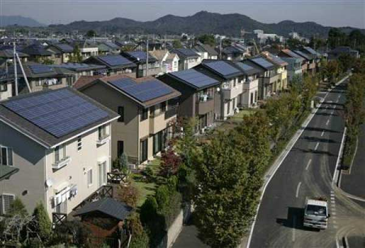

О солнечном доме ...
 Что такое Солнечный дом
Игорь ПРОВАТОРОВ
Что такое Солнечный дом
Игорь ПРОВАТОРОВ
Ни для кого не секрет, что за два последних столетия в буквальном смысле «вылетело в трубу» около половины ископаемых энергоресурсов, которые накапливались на Земле сотни миллионов лет. Если посмотреть на статистику численности населения Земли, сразу стает ясно, что проблемы связанные с нехваткой энергоресурсов будут увеличиваться из года в год в математической прогрессии: 1800 г. - 1,0 млрд.; 1900 г. – 1,6 млрд.; 1960 г. – 3,0 млрд.; 2000 г. – 6,0 млрд.; 2011 г. – 7,0 млрд.; 2050 г. (прогноз) – 9,0 млрд.
Проблемы эти будут связаны как с физической нехваткой нефти, газа и ядерного топлива, так и с постоянным подорожанием энергоносителей, ведь все основные экономики мира завязаны на потребление огромного количества энергоресурсов и уже в нынешнем столетии столкнутся с их дефицитом.
По прогнозам аналитиков разведанных запасов нефти и газа хватит на пятьдесят лет, урана на сто лет, а каменного угля на двести (при этом большие залежи углеводородов есть только у небольшого количества стран).
У человечества нет другого пути, кроме перехода на альтернативные виды получения энергии. Самым перспективным из них является использование энергии Солнца. Не злоупотребляя цифрами достаточно отметить, что Солнце за месяц «поставляет» на земную поверхность столько энергии, сколько можно извлечь из всех существующих на земле запасов энергоносителей, включая ядерное топливо. Мощность энергии поступающей на землю от Солнца примерно в 1000 раз превышает сегодняшние потребности человечества.
Солнечный свет как источник энергии интересен не только тем, что он практически неисчерпаем, но еще и тем, что он более-менее равномерно распределен по всей территории Земли и его интенсивность в разных местах различается не более чем в два раза. Поэтому энергию Солнца можно использовать не только в «теплых краях», но и в северных странах.

Существует два основных способа «отбора» солнечной энергии: фототермический и фотоэлектрический. При первом способе от энергии солнца нагревается теплоноситель (как правило, вода), который используется для отопления. Во втором случае солнечное излучение преобразуется в электрический ток при помощи солнечных батарей.
Прямое преобразование солнечной энергии в электричество – это будущее солнечной энергетики. И если раньше развитие отрасли тормозилось низким КПД солнечных батарей (в первых образцах он не превышал 1%), то на сегодняшний день КПД серийно выпускаемых фотоэлементов достигает 20%, а опытных образцов до 40%. Это дало сильный толчок разработке и внедрению концепции «Солнечного дома». Эта концепция получила широкое развитие на Западе и заключается в строительстве коттеджей, которые для своего жизнеобеспечения используют энергию Солнца и не подключены к внешним источникам тепловой и электрической энергии. Таких домов в мире за последние два десятилетия построены миллионы.
Довольно высокая стоимость солнечной энергетической установки компенсируется многими преимуществами. Во-первых, нет необходимости в проектировании и проведении таких инженерных коммуникаций, как газопроводы и электролинии. Особенно заметна выгода при освоении новых территорий, где отсутствуют подобные коммуникации. «Солнечный дом» можно построить где угодно, главное, чтобы была вода. Во-вторых, нет необходимости в постоянных и неравноправных взаимоотношениях с энергетическими компаниями - монополистами. В-третьих, можно значительно сэкономить на внутренних коммуникациях, так как пропадает необходимость в сложной системе отопления, котлах, счетчиках газа и электроэнергии. В-четвертых, «солнечный дом» не зависим от внешних источников энергии, его не отключат от света, газа и тепла, как в плановом порядке, так и в аварийном. И наконец, в-пятых, использование энергии солнца совершенно безопасно с точки зрения экологии.
Специалисты считают, что уже к середине 21 века солнечная энергетика займет положение, равное с другими способами получения энергии. Во многих странах уже сегодня этот вопрос находится в числе государственных приоритетов и им занимаются такие влиятельные организации как Еврокомиссия, Департамент энергии США, ЮНЕСКО, и многие другие.
На территории Украины, Белоруссии и Средней полосы России энергия солнечного потока (в пересчете на среднегодовой световой день) составляет в среднем 4 кВт/час на 1 м.кв. – это полторы тысячи киловатт часов энергии в год с одного квадратного метра. Много это или мало? Это приблизительно равняется потреблению электроэнергии (без учета отопления) на одного человека в современной семье.
Зная потребности в энергии, количество энергии поступающей от Солнца и КПД солнечных батарей можно без труда рассчитать размер энергетической установки, способной полностью обеспечить «солнечный дом» энергией. И становится ясно, что коттедж с солнечными батареями на крыше – это не картинка из фантастического будущего, а уже возможная сегодня реальность.
И дело тут за малым:
1. Население, и особенно те, кто планирует строить
собственные дома должны понять неотвратимость перехода на альтернативные
источники энергии.
2. Государства во главе с их правителями должны понять то же самое и выработать четкую государственную политику, направленную на использование энергии Солнца.